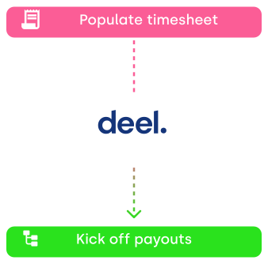

%EF%B9%96width=2000&name=Blog%20Cover%209%20procesos%20de%20RR.HH%20para%20automatizar%20hoy%20(y%20co%CC%81mo%20hacerlo%20con%20Deel).png)

Si bien los beneficios de la automatización de RR.HH. pueden ser claros para ti, empezar a hacerlo es un tema completamente diferente. Es posible que no estés seguro de qué software elegir, cuánto tiempo llevará implementarlo o incluso qué procesos puedes optimizar utilizando automatizaciones impulsadas por IA.
Este artículo te guiará a través de los nueve procesos de RR.HH. que puedes automatizar fácilmente con la plataforma de RR.HH. de Deel y cómo hacerlo rápidamente sin interrumpir tus flujos de trabajo diarios.
¿Qué es la automatización de Recursos Humanos?
La automatización de RR.HH. se refiere al uso de soluciones de software para agilizar y llevar a cabo de manera automática los procesos repetitivos con el fin de hacerlos más eficientes, menos lentos y menos propensos a errores.
SIRH (Sistemas de información de recursos humanos), sistemas de gestión de talentos, sistemas de seguimiento de candidatos, software de nómina y portales de autoservicio para empleados son herramientas que pueden automatizar, digitalizar y optimizar las operaciones de RR.HH.
La automatización de los procesos de RR.HH. permite al departamento de RR.HH.:
- Ahorrar tiempo y dinero en mano de obra
- Garantizar una mejor precisión de los datos
- Cumplir con las leyes laborales en diferentes lugares
- Tomar decisiones comerciales basadas en datos
- Proporcionar una experiencia equitativa y mejorada para los colaboradores
- Optimizar los esfuerzos de adquisición y retención de talento
- Apoyar el crecimiento de la empresa

Cómo determinar qué procesos se pueden automatizar
Antes de empezar a automatizar tus procesos de RR.HH., debes comprender los criterios utilizados para determinar si un proceso se puede automatizar.
Si el proceso:
- Es una tarea manual repetitiva
- Implica un gran volumen de transacciones.
- Ocurre con frecuencia
- Sigue un flujo de trabajo específico con pasos predefinidos
- Requiere manejar una gran cantidad de datos
- Tiene implicaciones de compliance y gestión de riesgos
- Impacta directamente en la experiencia de los colaboradores
- Debe involucrar múltiples soluciones de software para llevarse a cabo
- Tiene un impacto en el ROI o el crecimiento de la empresa
Entonces, sin duda, está listo para la automatización. Aquí está la lista de los nueve procesos más comunes que los equipos de RR.HH. se benefician de la automatización.
Onboarding y offboarding
El onboarding de empleados es una de las automatizaciones de RR.HH. más utilizadas según los datos de nuestros clientes. Esto no es una sorpresa, ya que es un proceso repetitivo que ocurre con frecuencia (especialmente si es una startup de rápido crecimiento), sigue un conjunto específico de pasos e implica el manejo de una gran cantidad de datos personales, de compliance y de nómina.
Se requiere demasiado tiempo y recursos para que los líderes de HR manejen el proceso de onboarding manualmente. Necesitas:
- Ingresar los datos de nuevos colaboradores en diferentes herramientas u hojas de cálculo
- Hacer un seguimiento de la documentación de compliance de cada país
- Aprobar el acceso de los colaboradores a las herramientas de colaboración
- Pedir y enviar equipos de trabajo
- Coordinar la inscripción a beneficios para colaboradores
- Enviar emails de bienvenida, recordatorios, etc.
La automatización de estos procesos puede ahorrarte hasta 86 horas mensuales en tareas administrativas según los resultados que han obtenido nuestros clientes.
Cuando utilizas un sistema automatizado SIRH para llevar a cabo el onboarding de tu fuerza laboral (global), mantienes todos los datos en un solo lugar para que no tengas que buscarlos en hojas de cálculo o en múltiples plataformas. Los datos también se actualizan automáticamente (y los colaboradores pueden actualizarlos por su cuenta a través de funciones de autoservicio) y puedes crear flujos de trabajo automatizados para enviar notificaciones a los nuevos miembros que se van sumando al equipo.
Lo mismo ocurre con el offboarding. En lugar de desactivar manualmente todas las cuentas que usó un colaborador, puedes automatizar el proceso:
- Revocar el acceso a las herramientas
- Coordinar una entrevista de salida
- Generar documentación de salida
- Enviar instrucciones para devolución de equipos de trabajo
En este caso, las automatizaciones de HR también tienen un papel en la seguridad de los datos, lo que reduce la posibilidad de una fuga de información o datos.
Puedes simplificar el proceso de onboarding con Deel habilitando nuestro plugin de onboarding para Slack el cual permite crear flujos de trabajo automatizados a través de los cuales puedes asignar automáticamente tareas según la ubicación del colaborador y el tipo de contrato. Reduce el trabajo manual del equipo de RR.HH, obtén una visión general completa de todo el proceso de onboarding y aumenta la retención de talento y el compromiso de los colaboradores.

Gestión del tiempo y la asistencia (seguimiento del tiempo libre)
Enviar solicitudes de licencia por email o a través de Slack requiere intercambiar mensajes una y otra vez con varias personas (jefe directo, equipo de RR.HH., e incluso la alta gerencia en algunos casos). Existe el riesgo de pasar por alto información importante o tomar demasiado tiempo para obtener la aprobación, lo que puede afectar negativamente las operaciones comerciales y la dinámica del equipo, y no puedes acceder a información en tiempo real sobre el tiempo libre de los colaboradores.
Automatizar el seguimiento del tiempo y la actualización y envío de los timesheets permite que el personal de RR.HH. tenga más tiempo para abordar de manera consciente el tiempo libre de los colaboradores y controlar temas importantes sobre la política de PTO y su implementación, tales como:
- ¿Qué empleados no están utilizando suficiente tiempo libre?
- ¿Cuál es la tasa de ausentismo de la empresa?
- ¿Los colaboradores toman muchos días de licencia por enfermedad?
Los profesionales de RR.HH. pueden aprovechar las herramientas de automatización como Time off de Deel para liberar tiempo para la estrategia y la gestión de personas, creando una cultura de trabajo positiva y eficiente. Más de 1200 equipos confían en nuestro plugin, el cual ayuda a centralizar las solicitudes y la aprobación de PTO, lo que te permite coordinar el tiempo libre sin tener que salir de Slack.

Gestión de datos de empleados
En equipos en crecimiento y grandes empresas, es difícil y lleva mucho tiempo hacer un seguimiento de las personas de diferentes departamentos, sus jefes, posibles promociones o transferencias internas, cambios de datos personales y más.
Sin un software de gestión de RR.HH. adecuado, los equipos de gestión del talento deben hacer esto manualmente, lo que genera errores potenciales y una cantidad significativa de tiempo dedicado a la recopilación y organización de datos, en lugar de su análisis.
Un SIRH centraliza los datos de los colaboradores, lo que elimina la necesidad de ingresar datos manualmente y brinda una única fuente de información para toda la empresa.
Se puede acceder fácilmente a los datos de los empleados, actualizarlos, almacenarlos de forma segura y verlos de un vistazo a través de un organigrama. Esto garantiza la precisión de los datos y la accesibilidad de la información y permite que el departamento de recursos humanos cree flujos de trabajo automatizados que los ayudarán a hacer las cosas más rápido y brindarán una mejor perspectiva de la fuerza laboral.
Org Chart de Deel para Slack ayuda a tu equipo a alinearte independientemente de las ubicaciones y las zonas horarias. Accede fácilmente a la información de la empresa sobre los miembros del equipo, conéctala con tu SIRH para actualizar automáticamente los datos y usa etiquetas de perfil de búsqueda para identificar a la persona adecuada para aclarar una determinada duda.

Búsqueda de talento y reclutamiento
La IA generativa ya tiene a la comunidad de RR.HH. esperanzada y optimista sobre su impacto en el proceso de contratación, acelerando las tareas manuales, facilitando la toma de decisiones y ayudando a crear una mejor experiencia para los candidatos y los colaboradores.
La contratación global ha abierto numerosas oportunidades para contratar a los mejores talentos del mundo, pero al mismo tiempo, los reclutadores a menudo necesitan analizar muchas más solicitudes de empleo que antes.
Las soluciones de automatización para la selección de currículums o la comunicación con los candidatos ayudan a eliminar las tareas que consumen mucho tiempo de los equipos de adquisición de talento y les dan tiempo suficiente para llevar a cabo entrevistas significativas y tomar mejores decisiones de contratación.
Deel se integra con Ashby, (un sistema de seguimiento de candidatos [ATS] a lo largo del proceso de selección y contratación), lo que permite a nuestros clientes pasar sin problemas de hacer una oferta a un candidato a llevar a cabo su proceso de onboarding una vez que haya aceptado. Nuestro sistema utiliza los detalles de la oferta para crear automáticamente una propuesta formal para tu candidato.

Verificaciones de antecedentes
Hacer una verificación manual de antecedentes de todos los colaboradores cuando contratas a nivel mundial es prácticamente imposible. La investigación manual implicaría visitar los juzgados o llamar a empleadores anteriores, lo que llevaría demasiado tiempo, costándote la pérdida de potenciales grandes candidatos.
El moderno software de automatización de RR.HH. te permite llevar a cabo verificaciones de antecedentes de tus colaboradores actuales y potenciales de manera fluida y sin importar de dónde los contrates. De hecho, el 93% de las empresas hacen esto para mejorar la calidad de la contratación y garantizar el compliance, con la ayuda de empresas de verificación de antecedentes que recopilan toda la información relevante sobre los colaboradores.
Certn es el partner de verificación de antecedentes de Deel que te permite acceder al 80% de toda la información de los colaboradores en cuestión de minutos, con la posibilidad de realizar un seguimiento del proceso en la aplicación. Nuestro aliado garantiza el compliance de SOC 2 y SOC 3, el compliance de GDPR y cuenta con la certificación ISO 27001, lo que significa que los resultados de tu verificación de antecedentes son seguros y están protegidos.

Compliance y gestión de documentación
Recopilar, organizar y almacenar la documentación de compliance sin un sistema de RR.HH. automatizado requeriría que los equipos de RR.HH:
- Se familiarizaran con las leyes laborales en todos los lugares donde tu empresa contrata
- Usarán procesos manuales para rastrear todo el papeleo a través de hojas de cálculo
- Enviaran manualmente recordatorios a los empleados que no hayan entregado los documentos requeridos
El uso de automatizaciones de RR.HH. para administrar el compliance es fundamental para los equipos globales porque reduce la posibilidad de errores humanos que generalmente resultan en problemas financieros y legales para la empresa. También acelera el proceso de contratación, lo que permite a las empresas asegurar los mejores candidatos sin que la burocracia se interponga en el camino.
Con Deel, puedes:
- Editar, enviar y firmar contratos en minutos desde tu dashboard de Deel
- Guardar toda la documentación de forma segura en un solo lugar
- Generar contratos localizados para colaboradores y freelancers
- Tener la seguridad de que los contratos se revisan con regularidad para anticiparse a cualquier cambio en las leyes locales (sin necesidad de conocer las reglamentaciones)
Usa esta guía para asegurar que cada detalle del proceso de onboarding asincrónico esté cubierto durante los primeros tres meses,


Procesamiento de nómina
Hace solo tres años, alrededor de un tercio de los dueños de empresas todavía usaban hojas de cálculo para calcular y procesar la nómina, gastando más de una semana cada mes en esto. Ahora, con más y más equipos volviéndose globales, este proceso se convierte en una hazaña propensa a riesgos de errores para la empresa.
La automatización de la nómina reduce el trabajo duplicado para el departamento de RR.HH., reduce los costos de procesamiento de la nómina y garantiza cálculos precisos de los salarios, las comisiones, el pago de horas extra, las deducciones, etc. Aceleraras el tiempo de procesamiento de tu nómina y protegerás los datos del acceso no autorizado, mientras mantienes los registros durante el tiempo que sea necesario.
Deel te permite optimizar la gestión de la nómina para todo tu equipo, sin importar cómo sean contratados. Nuestros servicios de Global Payroll te permiten reunir a tus colaboradores directos, empleados de EOR y freelancers bajo el mismo techo y eliminar la necesidad de múltiples procesos y herramientas. Deel gestiona lo siguiente por ti.
- Beneficios y deducciones para colaboradores
- Presentación local ante las autoridades
- Pago de salarios e impuestos (cuando corresponda)
- Creación y entrega de recibos de pago
- Onboarding y offboarding en compliance

Reportes
Los reportes de RR.HH. son esenciales si quieres aprender de los errores del pasado o descubrir información útil para identificar tendencias o descubrir oportunidades para optimizar los gastos o el rendimiento de la fuerza laboral. Al administrar tu equipo a través de hojas de cálculo o a través de múltiples herramientas, necesitas tiempo y recursos para recopilar y organizar los datos de una manera que te permita obtener y visualizar información importante.
Esta falta de visibilidad de los datos puede interferir con el crecimiento de tu empresa porque no podrás tomar decisiones informadas, asignar recursos de manera eficiente o realizar un seguimiento preciso del progreso. La falta de transparencia también puede llevar a que los stakeholders no se comprometan, lo que reduce su confianza en las iniciativas de recursos humanos y dificulta la colaboración efectiva.
Deel brinda información en tiempo real sobre análisis globales, para que puedas verificar, comparar y comprender fácilmente tus gastos y visualizarlos para optimizar tus gastos globales. Con los informes de nómina, puedes detectar rápidamente cualquier discrepancia entre monedas o errores entre ciclos y personalizar tu dashboard para que sea más digerible para los stakeholders.

Capacitación de personal y gestión del rendimiento.
Hacer un seguimiento del aprendizaje y el rendimiento de los colaboradores y darles retroalimentación periódica puede tener un impacto positivo en su compromiso, la productividad y el crecimiento.
Sin un proceso eficiente y automatizado, puedes perder el acceso a las revisiones de desempeño de los colaboradores anteriores, y no podrás realizar un seguimiento del progreso de tu equipo. Pasarás demasiado tiempo creando y rastreando feedback en hojas de cálculo o creando recursos de aprendizaje que pueden no ser lo suficientemente atractivos para tu equipo.
Los procesos automatizados pueden ayudar a llevar a cabo ciclos de revisión del desempeño y capacitaciones para colaboradores más fluidas, ágiles y atractivas, para una mejor experiencia y datos más accesibles y precisos para los gerentes y el equipo de RR.HH.
Deel ofrece una integración con BambooHR la cual te permite utilizar las funciones nativas de aprendizaje y gestión del rendimiento de esta plataforma para tus trabajadores de Deel.

Conoce cómo configurar la integración con BambooHR en Deel.
Haz las cosas más rápido sin interrumpir tus flujos de trabajo de RR.HH.
La automatización de procesos de recursos humanos lleva todas las funciones a otro nivel, haciéndolas más eficientes, confiables y rápidas. ¡Tú pones lo humano en recursos humanos, la automatización de nosotros hace el resto!
Nuestra plataforma de RR.HH te ayuda a trabajar sin distracciones al ofrecer flujos de trabajo personalizables que te quitan cargas innecesarias. Deel está diseñado para equipos globales como el tuyo, así que dile adiós a las tareas que consumen mucho tiempo y los retrasos en los procesos, y dile hola a Deel.
Habla con nuestros expertos para obtener más información sobre Deel HR.


.svg)